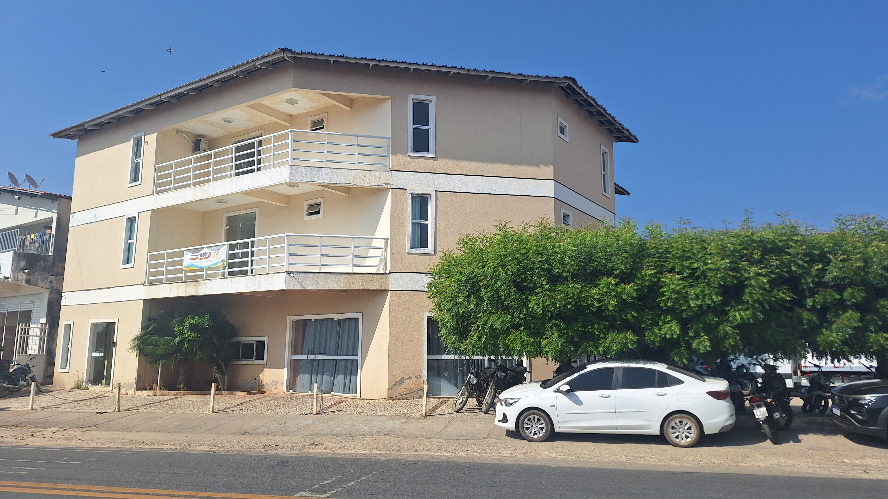

A missão da Secretaria Municipal da Educação de Solonópole é garantir educação básica de qualidade para crianças, jovens e adultos no município, fortalecendo a gestão democrática na rede pública de ensino e assegurando a manutenção das escolas conforme padrões de qualidade estabelecidos.
José Célio Pinheiro
Secretário de Educação

Endereço: R. Dep. Alfredo Barreira Filho, N° 35 - Bairro Simião Machado
Telefone: (88) 3518-1387
Email: Sme@Solonopole.Ce.Gov.Br
Horário: 07:30 às 11:30 e 13:30 às 17:00